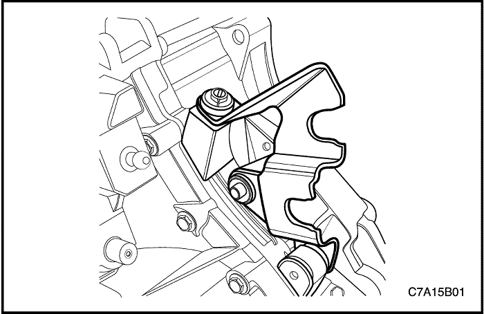
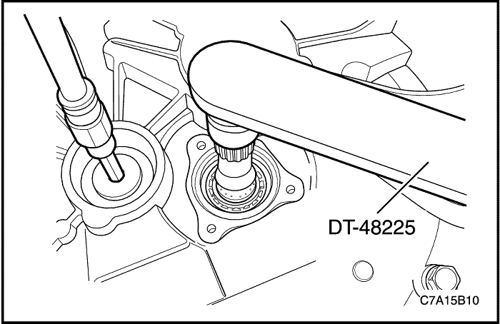
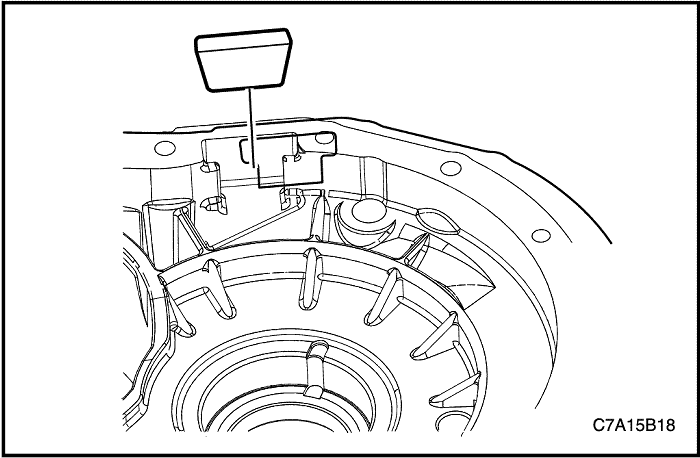
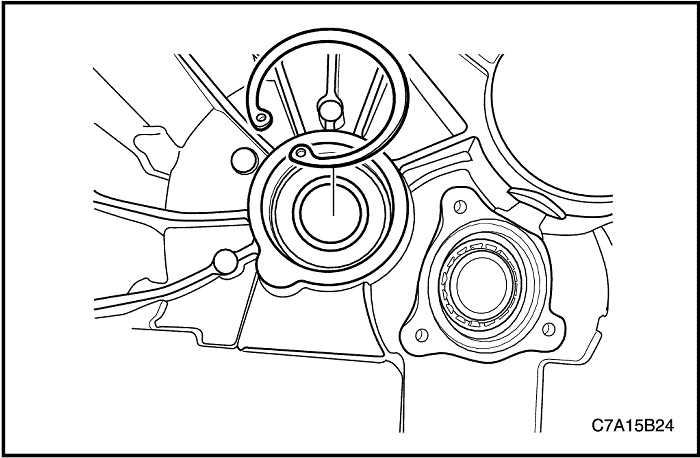

REPARACIÓN DE LA UNIDAD



Desmontaje de los componentes principales
Herramientas necesarias
Mango del botador universal DT-48179
Extractor/instalador de manguitos de aguja DT-48182
Puente de desmontaje DT-48183
Extractor de la pista de cojinete del diferencial DT-48189
Soporte del eje primario DT-48225
Extractor/instalador de cojinetes de bola en la ranura del alojamiento de la caja de cambios DT-48226
Extractor/instalador de cojinetes y engranajes DT-48227
Extractor/instalador de cojinetes de bola en la ranura del alojamiento del embrague DT-48228
Extractor del eje intermedio DT-48229
Instalador/extractor del eje primario y secundario DT-48231
Protector del cuerpo de sincronización del eje primario DT-48232
procedimiento de desmontaje (desarmado, desensamble, desensamblaje)
- Desmonte la caja de cambios del vehículo. Consulte el apartado "Conjunto de la caja de cambios" de esta sección.
- Quite los tornillos, la arandela y el soporte del cable de mando del cambio de marchas.

- Quite el tornillo y desmonte el engranaje conducido del velocímetro.
- Quite los tornillos de fijación del cilindro esclavo concéntrico.
- Desconecte el tubo del cilindro esclavo concéntrico de dicho cilindro.

Importante: Cuando desmonte el casquillo, no lo haga con demasiada fuerza.
- Quite el casquillo del tubo del cilindro esclavo concéntrico.
- Retire el tubo del cilindro esclavo concéntrico.

- Desmonte la junta tórica y el cilindro esclavo concéntrico.
- Realice un orificio en el tapón de sellado del eje intermedio con una herramienta adecuada.
Importante: Perfore el tapón de sellado en el centro para evitar daños en la caja de cambios.

- Retire el tapón de sellado del eje intermedio y el tubo de aceite utilizando una herramienta adecuada. Deseche el tapón de sellado y el tubo de aceite.

- Sujete el eje primario con la DT-48225.
- Quite el tapón de retención del eje intermedio. Deseche el tapón de retención.
- Coloque la palanca de cambio en cualquier velocidad.
- Desmonte la DT-48225.

- Quite los tornillos de la tapa trasera de la caja de cambios.

- Desmonte la tapa trasera de la caja de cambios y el tubo del aceite.
- Sujete el eje primario con la DT-48225.
- Desmonte el tapón de retención del eje primario y del eje secundario. Deseche los tapones de retención.
- Coloque la palanca de cambio en cualquier velocidad.
- Desmonte la DT-48225.
- Desmonte el conjunto del eje del cambio de marchas.
- Coloque la caja de cambios en punto muerto.
- Quite el tornillo de la guía de cambio (1).
- Quite los tornillos de retención del cambio.
- Desmonte la palanca selectora (2).
- Desmonte el conjunto de eje del cambio de marchas (3).

- Desmonte el interruptor de la luz de marcha atrás y la arandela del alojamiento de la caja de cambios.
- Quite los ocho tornillos del lateral del alojamiento del embrague.
- Quite los doce tornillos del lateral del alojamiento de la caja de cambios.
- Desmonte el alojamiento de la caja de cambios del alojamiento del embrague.
- Monte la DT-48231 en el alojamiento de la caja de cambios.
- Apriete los 4 tornillos (1).
- Enrosque los vástagos (2) en los ejes primario y secundario.
- Separe el alojamiento de la caja de cambios del alojamiento del embrague.
- Sujete los vástagos (2) utilizando una herramienta adecuada.
- Gire las tuercas (3) en el sentido de la flecha.
- Extraiga la DT-48231 del alojamiento de la caja de cambios.
- Desenrosque los vástagos (2) en los ejes primario y secundario.
- Quite los cuatro tornillos (1).
- Instale la DT-48232 y el tapón de retención en el eje primario.
Importante: Esto evita que el conjunto del cuerpo de sincronización de 3ª/4ª se separe.
- Desmonte el conjunto del eje intermedio, primario y secundario con las respectivas horquillas de selección fuera del alojamiento del embrague.
- Golpee el eje intermedio hasta sacarlo del cojinete de bola de la ranura del eje intermedio, utilizando la DT-48229.
Importante: Sujete firmemente el conjunto del eje primario y secundario.
- Desmonte la DT-48232 y el tapón de retención del eje primario.
- Desmonte el diferencial (1) y el cojinete del rodillo del eje secundario (2) del alojamiento del embrague.

- Extraiga el imán del alojamiento de la caja de cambios.

- Extraiga el canal de drenaje (1) del alojamiento de la caja de cambios.
- Extraiga el casquillo del raíl de cambio al ralentí (2) del alojamiento de la caja de cambios.
- Extraiga el raíl de cambio al ralentí (3) del alojamiento de la caja de cambios.

- Extraiga el pasador roscado (3), el muelle de torsión (2) y el sistema de bloqueo de cambio a marcha atrás (1) del alojamiento de la caja de cambios. Deseche el pasador roscado

- Desmonte el manguito de aguja del alojamiento de la caja de cambios utilizando la DT-48179 y la DT-48182.
- Desmonte el eje primario y los cojinetes de bola de la ranura del eje secundario del alojamiento de la caja de cambios utilizando la DT-48179 y la DT-48226.
- Desmonte la pista del cojinete del diferencial del alojamiento de la caja de cambios.
- Instale la DT-48189.
- Gire la tuerca (1) en el sentido de la flecha.
- Instale la DT-48183 en la DT-48189.
- Sujete el vástago utilizando una herramienta adecuada.
- Gire la tuerca (2) en el sentido de la flecha.
- Extraiga el suplemento del alojamiento de la caja de cambios.
- Retire la arandela de junta del eje del alojamiento de la caja de cambios. Deseche la arandela de junta.
- Desmote el cojinete de rodillo del eje primario del alojamiento del embrague, utilizando la DT-48179 y la DT-48227.

- Quite el anillo elástico del cojinete de bola de ranura del eje intermedio.
- Desmonte el cojinete de bola de la ranura del eje intermedio del alojamiento del embrague, utilizando la DT-48179 y la DT-48228.

- Desmonte la pista del cojinete del diferencial del alojamiento del embrague.
- Instale la DT-48189.
- Gire la tuerca (1) en el sentido de la flecha.
- Instale la DT-48183 en la DT-48189.
- Sujete el vástago utilizando una herramienta adecuada.
- Gire la tuerca (2) en el sentido de la flecha.

- Extraiga el suplemento del alojamiento del embrague.

- Retire la arandela de junta del eje de la caja del embrague. Deseche la arandela de junta.
Desmontaje del eje del cambio
procedimiento de desmontaje (desarmado, desensamble, desensamblaje)
Importante: Observe la orientación del pasador espiral antes del desmontaje.
- Extraiga el pasador espiral (6). Deseche el pasador espiral.
- Extraiga el pasador espiral (5). Deseche el pasador espiral.
- Quite el enclavamiento del cambio de marchas (3).
- Extraiga la garra del cambio de marchas (4).
- Desmonte el asiento de los muelles exteriores (2).
- Extraiga el muelle de presión de 5ª/marcha atrás (1).

- Extraiga el pasador espiral (2). Deseche el pasador espiral.
- Desmonte la palanca de cambios (1).
- Quite el tapón de ventilación (3).
- Quite la tapa del cambio (4).

- Desmonte los anillos elásticos (1). Deseche los anillos elásticos.
- Desmonte el asiento interior de los muelles (2).
- Desmonte el muelle de presión de 1ª/2ª (3).
- Desmonte el disco de ángulo (4) de la varilla de cambio (5).
- Limpie todos los componentes con una solución adecuada.
- Compruebe si los componentes presentan desgaste o daños.
Desmontaje del eje intermedio
Herramientas necesarias
Adaptador de presión del eje intermedio DT-48233
procedimiento de desmontaje (desarmado, desensamble, desensamblaje)
- Presione para extraer el conjunto de 1ª y el de 2ª como una unidad, desde el eje intermedio, utilizando el plato separador del engranaje y cojinete, la DT-48233 y una prensa hidráulica.

- Coloque el conjunto de 1ª y el de 2ª, como una unidad, sobre el banco.
- Desmonte la arandela de empuje (1).
- Desmonte el cojinete de rodillo (2).
- Desmonte la 1ª (3).
- Desmonte el cojinete de rodillo (4).
- Retire el collarín del cojinete (5).
- Desmonte la arandela de empuje (6).

- Desmonte el cono interior de 1ª (1).
- Desmonte el anillo de bloqueo de 1ª (2).
- Desmonte el cono exterior de 1ª (3).
- Desmonte el conjunto del sincronizador de 1ª/2ª (4).

- Desmonte el cono exterior de 2ª (1).
- Desmonte el anillo de bloqueo de 2ª (2).
- Desmonte el cono interior de 2ª (3).
- Desmonte el conjunto de 2ª.

- Desmonte los cojinetes de agujas del eje intermedio.
Desmontaje del eje primario
Herramientas necesarias
Adaptador de presión del eje primario/secundario DT-48234
procedimiento de desmontaje (desarmado, desensamble, desensamblaje)
- Desmonte el cojinete del manguito utilizando el engranaje y el plato separador de cojinetes, así como una prensa hidráulica.

- Desmonte la arandela de empuje (1).
- Desmonte el conjunto de 4ª (2).
- Desmonte la jaula de agujas (3).
- Desmonte el anillo de bloqueo de 4ª (4).

- Desmonte el collarín del cojinete y el sincronizador de 3ª/4ª del eje primario utilizando el engranaje y el plato separador de cojinetes en 3ª, la DT-48234 y una prensa hidráulica.

- Desmonte los siguientes componentes como un conjunto:
- El collarín de cojinete (1).
- El conjunto del sincronizador de 3ª/4ª (2).
- La arandela de empuje (3).
- El cojinete de empuje (4).
- El anillo de bloqueo de 3ª (5).
- El conjunto de 3ª (6).

- Desmonte la jaula de agujas (1).
- Desmonte el cojinete de empuje (2).
- Presione para extraer el conjunto de 5ª utilizando el engranaje y el plato separador de cojinetes, la DT-48234 y una prensa hidráulica.
Desmontaje del eje secundario
Herramientas necesarias
Adaptador de presión del eje primario/secundario DT-48234
procedimiento de desmontaje (desarmado, desensamble, desensamblaje)
- Presione para extraer el engranaje conducido de 4ª utilizando el engranaje y el plato separador de cojinetes, la DT-48234 y una prensa hidráulica.
Importante: El engranaje conducido de 4ª está muy apretado.
- Desmonte el engranaje conducido de 3ª utilizando el engranaje y el plato separador de cojinetes, la DT-48234 y una prensa hidráulica.
Importante: El engranaje conducido de 3ª está muy apretado.

- Desmonte el conjunto de 5ª (1) y las dos jaulas de agujas (2).
- Desmonte el collarín del cojinete utilizando el engranaje y el plato separador de cojinetes, la DT-48234 y una prensa hidráulica.
Importante: No entrar en contacto con la arandela de empuje situada debajo del engranaje de marcha atrás.

- Desmonte los siguientes componentes como un conjunto:
- El collarín de cojinete (1).
- El anillo de bloqueo de 5ª (2).
- El conjunto del sincronizador de 5ª/marcha atrás (3).
- El anillo de bloqueo de marcha atrás (4).
- La marcha atrás (5).
- La jaula de agujas (6).
- Desmonte el collarín y la arandela de empuje utilizando el engranaje y el plato separador de cojinetes, la DT-48234 y una prensa hidráulica.
Importante: Asegúrese de que el engranaje y el plato separador de cojinetes no entran en contacto con el piñón antes de extraer el collarín y la arandela de empuje.

Limpieza e inspección del alojamiento del embrague y de la caja de cambios
Revise el alojamiento del embrague y el del diferencial para lo siguiente:
- Grietas
- Porosidad
- Superficie de contacto dañada
- Roscas de tornillos desgastadas
- Distorsión
Sustituya cualquier pieza que muestra alguna de estas condiciones.

Limpieza e inspección de los engranajes
Revise los dientes y ranuras de los engranajes por si presentasen un nivel de desgaste o daños excesivo.
Quite las pequeñas imperfecciones y arañazos con una piedra de aceite. Sustituya los engranajes desgastados o dañados.

Limpieza e inspección de la arandela de empuje y del cojinete
- Compruebe si hay daños o desgaste en la arandela de empuje. Sustituya las arandelas de empuje desgastadas o dañadas.

- Compruebe el estado de todos los cojinetes de empuje, el cojinete del eje primario y del eje secundario. Lave los cojinetes en profundidad con un disolvente de limpieza. Aplique aire comprimido a los cojinetes. Lubrique los cojinetes con aceite ligero. Compruebe si los cojinetes presentan resistencia girando lentamente la pista con la mano.
Importante: No permita que los cojinetes giren. Gire los cojinetes lentamente con la mano. Si los cojinetes dan vueltas pueden provocar daños en los rodillos.

Limpieza e inspección de los sincronizadores
- Limpie el sincronizador con un disolvente limpio.
- Seque los componentes al aire.
- Revise los dientes del sincronizador y compruebe las siguientes anomalías:
- Desgaste
- Rasguños
- Marcas
- Rebabas
- Roturas
- Revise las llaves o los muelles y compruebe las siguientes anomalías:
- Desgaste
- Grietas
- Distorsión
- Si se da alguna de las siguientes condiciones, sustituya el sincronizador.
Limpieza e inspección de la horquilla de selección
Compruebe si las horquillas de selección presentan desgaste o daños. Sustituya cualquier pieza desgastada o dañada.
| © Copyright Chevrolet Europe. Reservados todos los derechos |